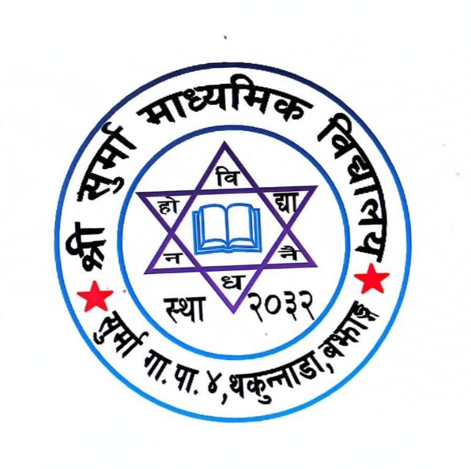
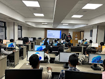
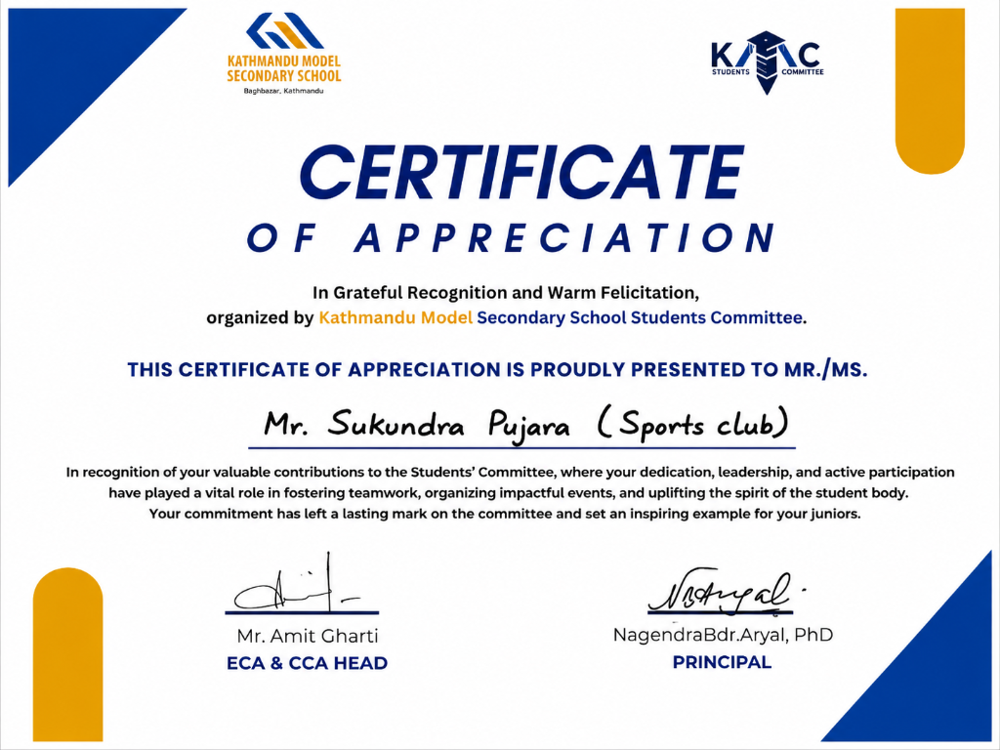
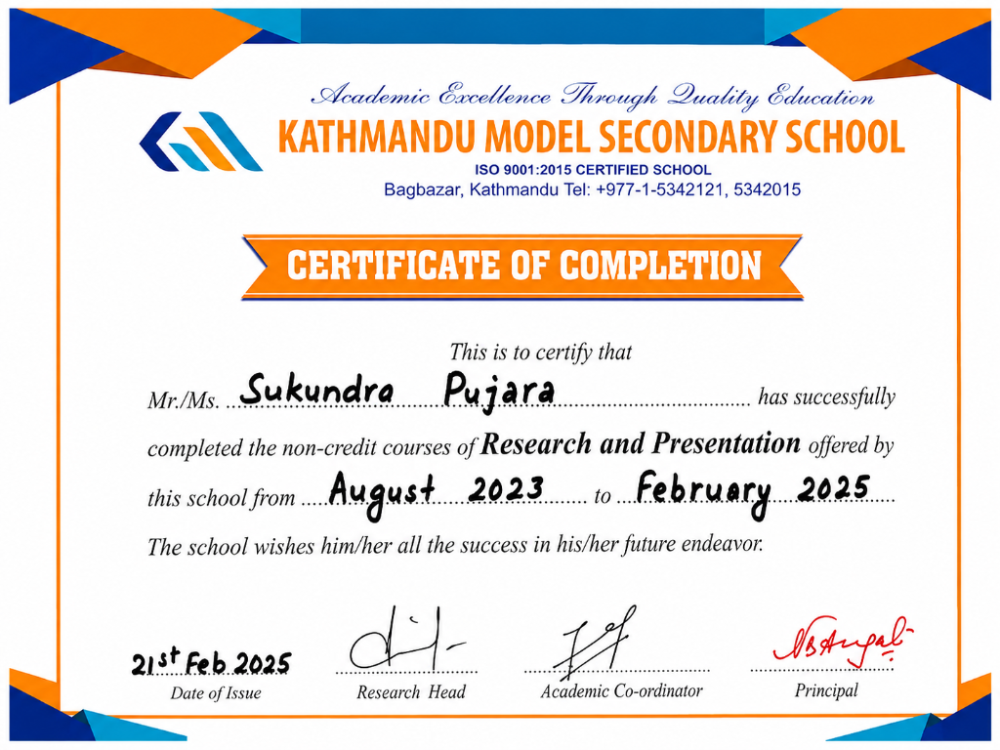
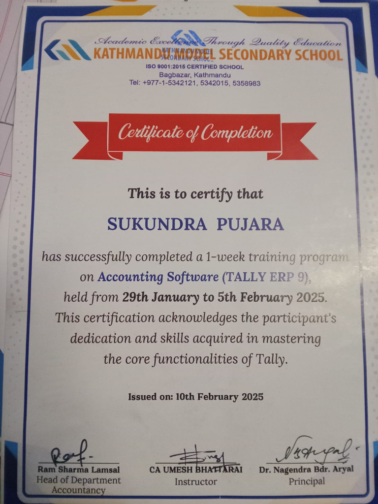

Frontend
- JavaScript Intermediate
- HTML5 Intermediate
- CSS3 Intermediate
I’m Er. Sukundra Pujara from Nepal, studying BSc (Hons) Computer Science with Artificial Intelligence at Softwarica College in collaboration with Coventry University. My interests include data science, web development with Django, AI and machine learning, and robotics.
A little about my studies, interests, and direction as a developer.
I am Sukundra Pujara, a Computer Science and Artificial Intelligence student with a strong interest in full-stack development, AI, and machine learning.
I am pursuing a BSc (Hons) in Computer Science with Artificial Intelligence at Softwarica College of IT & E-Commerce, in collaboration with Coventry University. I am interested in designing modern web applications, building scalable software, and exploring technology that can help solve real-world problems.
I enjoy learning how frontend and backend systems work together. I am developing my skills in Python, Django, JavaScript, React.js, and MySQL, while expanding my knowledge of artificial intelligence, machine learning, deep learning, and data science.
I learn by experimenting with technologies, building practical projects, and working through complex concepts. I value clean code, logical thinking, continuous improvement, and solving problems step by step.
My goal is to contribute to useful technology projects while growing my skills in software development and intelligent computing.
Driven by technology. Focused on innovation. Committed to continuous growth.
Practical technical skills I’m developing through coursework and software projects.
My academic path and the foundations behind my interest in technology.
Softwarica College of IT and E-Commerce ↗ · In collaboration with Coventry University, UK
Kathmandu Model Secondary School (KMC), Kathmandu
After completing my SEE at Shree Surma Secondary School in 2023 with a GPA of 3.00, I continued my higher secondary education at KMC. During my school years, I developed an interest in computer technology, programming, communication, and personal development. I was a member of the school sports club and actively interested in cricket.
My academic journey helped me build confidence, discipline, and a strong foundation for higher education. My goal is to pursue a career in technology, particularly in Python development, Artificial Intelligence, and Data Science.

Shree Surma Secondary School, Bajhang · GPA 3.00
During my school days, I enjoyed learning new things, taking part in sports, exploring technology, and building my knowledge and skills. I believe in hard work, discipline, and continuous learning.
My goal is to fulfil my family's dreams and contribute positively to my community and country.
Selected projects and experiments from my ongoing learning journey.
Ask Python questions and learn more about my portfolio.
Ask beginner-friendly Python questions by text or, in supported browsers, voice. Answers use the learning guides bundled with this site, and the assistant can also answer questions about my portfolio.
Organizations and learning areas from my internship experience.
Internship learning areas

Certificates and recognition from my studies and learning activities.

Sports Club · Kathmandu Model Secondary School Students Committee
Open certificate ↗
Certificate of Completion · August 2023 to February 2025
Open certificate ↗
One-week training program · Kathmandu Model Secondary School · February 2025
Open certificate ↗Use the notes and exercises to study Python step by step.
Explore a searchable curriculum with practical examples, lesson-by-lesson progress, and practice challenges.
Start learning PythonThanks for taking the time to explore my portfolio, projects, and learning journey.